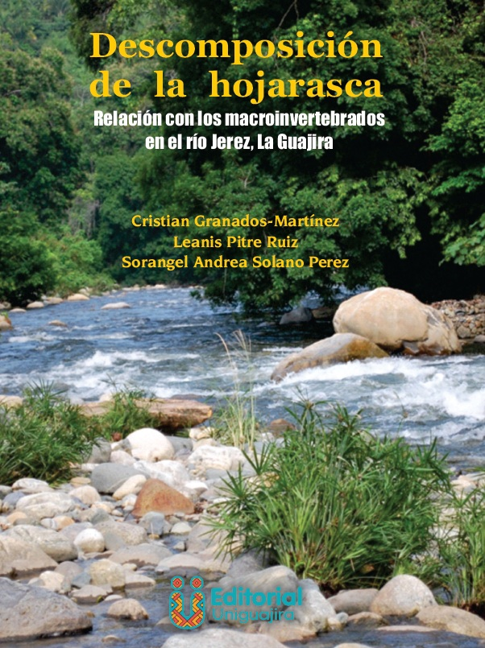
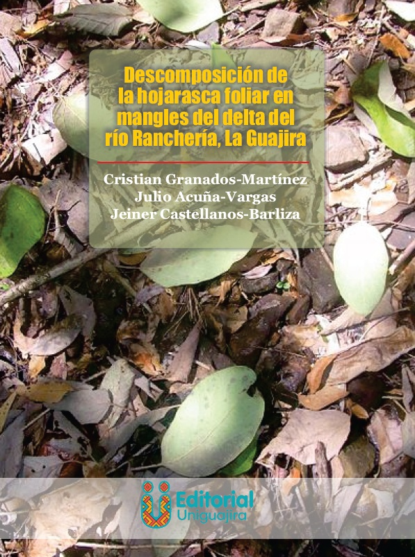
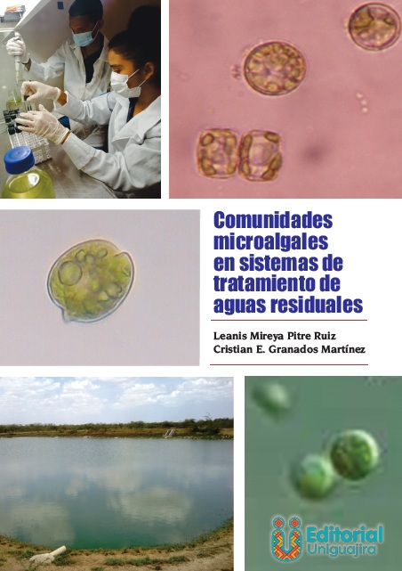
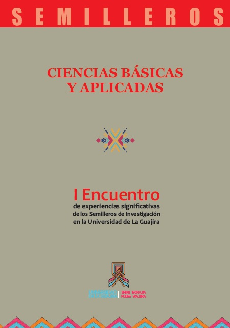

Libros y Capítulos
Libros Publicados
2023

Descomposición de la hojarasca y su relación con los macroinvertebrados en el río Jerez, La Guajira
Autores: Cristian Granados-Martínez, Leanis Pitre Ruiz, Sorangel Andrea Solano Perez
Descripción: Este libro analiza los procesos de descomposición de hojarasca en ecosistemas acuáticos y su importante relación con las comunidades de macroinvertebrados en el río Jerez, La Guajira. Incluye índice de tablas y figuras, además de fotografías a color que documentan el trabajo de campo y los hallazgos de la investigación.
Editorial: Universidad de La Guajira
ISBN: 978-628-7718-10-4
Año: 2023
2022

Descomposición de la hojarasca foliar en manglares del delta del Río Ranchería, La Guajira
Autores: Cristian Granados Martínez, Julio Acuña Vargas, Jeiner Castellanos Barliza
Descripción: Investigación sobre los procesos ecológicos de descomposición de hojarasca en ecosistemas de manglar del delta del río Ranchería. El estudio documenta la dinámica de nutrientes y el papel de estos ecosistemas costeros en el Caribe colombiano.
Editorial: Universidad de La Guajira
ISBN: 978-628-7581-80-7
Año: 2022
Libros de Acceso Abierto

Comunidades microalgales en sistemas de tratamiento de aguas residuales
Descripción: Este libro de acceso abierto explora el rol de las comunidades microalgales en sistemas de tratamiento de aguas residuales. Incluye índice de tablas y figuras, además de fotografías a color que ilustran las diferentes especies y procesos estudiados.
Editorial: Universidad de La Guajira
ISBN: 978-628-7718-06-7
Tipo: Acceso Abierto
Memorias y Compilaciones

I Encuentro de experiencias significativas de los Semilleros de Investigación en la Universidad de La Guajira: Ciencias Básicas y Aplicadas
Autores: Cristian Darío Montoya Misas, Marlis Carolina Holguín Córdoba, Cristian Enrique Granados Martínez, Nelson Valero, Michel Caballero Castaño
Descripción: Compilación de experiencias significativas de los semilleros de investigación en el área de ciencias básicas y aplicadas. Este libro documenta el trabajo investigativo de estudiantes y docentes en formación.
Editorial: Universidad de La Guajira
ISBN: 978-958-5178-91-5
Capítulos de Libros
2020
Macroinvertebrados acuáticos de la reserva natural Bojonawi (Escudo Guayanés), río Orinoco y planicie inundable, Vichada, Colombia
En: VIII. Biodiversidad de la reserva natural Bojonawi, Vichada, Colombia: río Orinoco y planicie de inundación
Instituto de Investigación de Recursos Biológicos Alexander von Humboldt
ISBN: 978-958-5183-01-8, pp. 129-146
2018
Macroinvertebrados acuáticos de los ríos Guayabero medio, bajo Losada y bajo Duda, sierra de La Macarena, Meta, Colombia
En: V. Biodiversidad de la sierra de La Macarena, Meta, Colombia. Parte I. Ríos Guayabero medio, bajo Losada y bajo Duda
Serie Editorial Fauna Silvestre Neotropical
ISBN: 978-958-5418-53-0, pp. 97-120
Limnología de los ríos Guayabero medio, bajo Losada y bajo Duda, sierra de La Macarena, Meta, Colombia
En: V. Biodiversidad de la sierra de La Macarena, Meta, Colombia. Parte I. Ríos Guayabero medio, bajo Losada y bajo Duda
Serie Editorial Fauna Silvestre Neotropical
ISBN: 978-958-5418-53-0, pp. 63-80
2017
Macroinvertebrados acuáticos de Caño Cristales
En: Fauna de Caño Cristales, sierra La Macarena, Meta, Colombia
Serie Editorial Fauna Silvestre Neotropical
Instituto de Investigación de Recursos Biológicos Alexander von Humboldt
ISBN: 978-958-5418-11-0, pp. 47-65
Área de estudio
En: Fauna de Caño Cristales, sierra La Macarena, Meta, Colombia
Serie Editorial Fauna Silvestre Neotropical
Instituto de Investigación de Recursos Biológicos Alexander von Humboldt
ISBN: 978-958-5418-11-0, pp. 31-44
Macroinvertebrados acuáticos del río Bita
En: Biodiversidad del río Bita, Vichada, Colombia
Serie Editorial Fauna Silvestre Neotropical
Instituto de Investigación de Recursos Biológicos Alexander von Humboldt
ISBN: 978-958-5418-21-9, pp. 122-141
2015
Análisis de las preferencias alimenticias y estructuras tróficas de los macroinvertebrados acuáticos en un río de montaña colombiano
En: Tendencias de Investigación en Limnología Tropical: Perspectivas Universitarias en Latinoamérica
UNAM - Universidad Nacional Autónoma de México
ISBN: 978-607-02-7199-1, pp. 339-348
Biota acuática de la serranía de La Macuira, Parque Nacional Natural Macuira, Guajira colombiana
En: XII. Cuencas Pericontinentales de Colombia, Ecuador, Perú y Venezuela: Tipología, Biodiversidad, Servicios Ecosistémicos y Sostenibilidad de los Ríos, Quebradas y Arroyos Costeros
Instituto Alexander Von Humboldt & Instituto de Ciencias Naturales de la Universidad Nacional
ISBN: 978-958-8889-25-2 / 978-958-8889-26-9, pp. 293-315
Relaciones longitud-peso y estimación de la masa seca de insectos acuáticos de los órdenes Ephemeroptera, Plecoptera, Trichoptera, asociados a la cuenca baja del río Jerez del departamento de La Guajira, Colombia
En: Realidades y Perspectivas Educativas, Tecnológicas y Científicas en el Siglo XXI
Universidad de La Guajira
ISBN: 978-958-8530-90-1, pp. 161-162
Descomposición de dos especies de mangle en tres diferentes sustratos en el delta del río Ranchería (brazo Riíto), Riohacha, Colombia
En: Realidades y Perspectivas Educativas, Tecnológicas y Científicas en el Siglo XXI
Universidad de La Guajira
ISBN: 978-958-8530-90-1, pp. 166-167
Caracterización de la herpetofauna asociada a la estacionalidad climática, laguna Buenavista, Manaure, La Guajira
En: Realidades y Perspectivas Educativas, Tecnológicas y Científicas en el Siglo XXI
Universidad de La Guajira
ISBN: 978-958-8530-90-1, pp. 177-178
Deriva de macroinvertebrados acuáticos en la cuenca baja del río Jerez, municipio de Dibulla, Colombia
En: Vinculación Universidad Sector Empresarial: Factor Clave para el Desarrollo Regional
Universidad de La Guajira
ISBN: 978-958-8530-91-8, pp. 333-337
Dieta de Leptodactylus insularum (Leptodactylidae: Anura) presente en sistemas productivos asociados a bosque seco tropical, Dibulla, La Guajira
En: X Convención Internacional Sobre Medio Ambiente y Desarrollo, Memorias
Ministerio de Ciencia, Tecnología y Medio Ambiente - Cuba
ISBN: 978-959-300-073-4, pp. 208-209
Descomposición de dos especies de mangle en tres diferentes sustratos en el delta del río Ranchería (brazo Riíto), Riohacha, Colombia
En: X Convención Internacional Sobre Medio Ambiente y Desarrollo, Memorias
Ministerio de Ciencia, Tecnología y Medio Ambiente - Cuba
ISBN: 978-959-300-073-4, pp. 254-255
Herpetofauna asociada a la estacionalidad climática, laguna Buenavista, Manaure, La Guajira
En: X Convención Internacional Sobre Medio Ambiente y Desarrollo, Memorias
Ministerio de Ciencia, Tecnología y Medio Ambiente - Cuba
ISBN: 978-959-300-073-4, pp. 111
2011
Producción primaria fitoplanctónica y metabolismo durante una época lluviosa en una laguna costera estuarina
En: Memorias del I Encuentro Regional de Investigadores en Ciencias de la Vida. Sinergia Caribe
Universidad del Magdalena
ISBN: 978-958-746-040-7, pp. 91
Estadísticas
- Total de libros: 4
- Libros de autor principal: 2
- Libros de acceso abierto: 1
- Memorias y compilaciones: 1
- Capítulos de libros: 17
- Años de publicación: 2011-2020